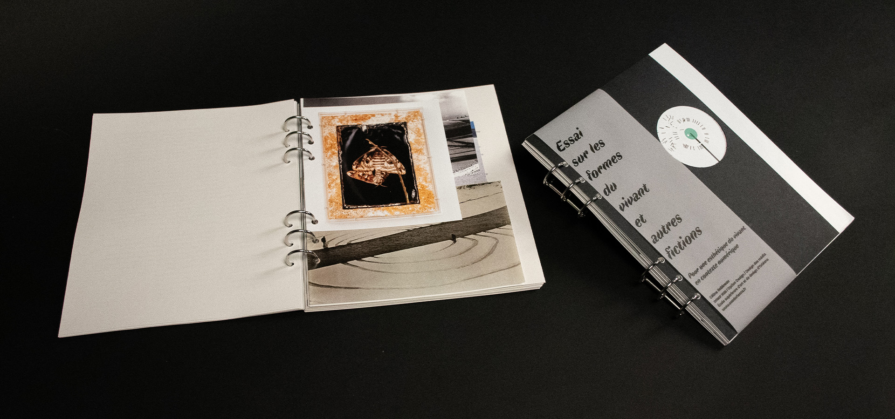
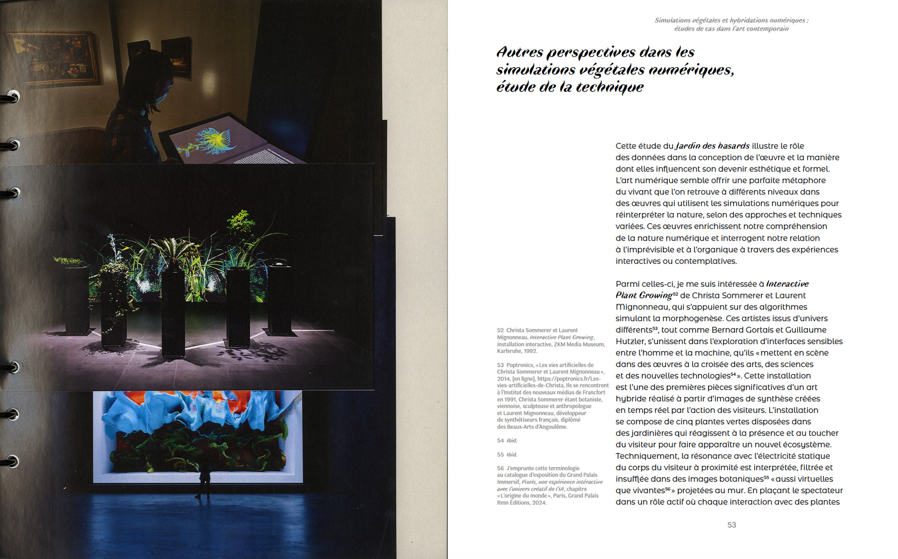
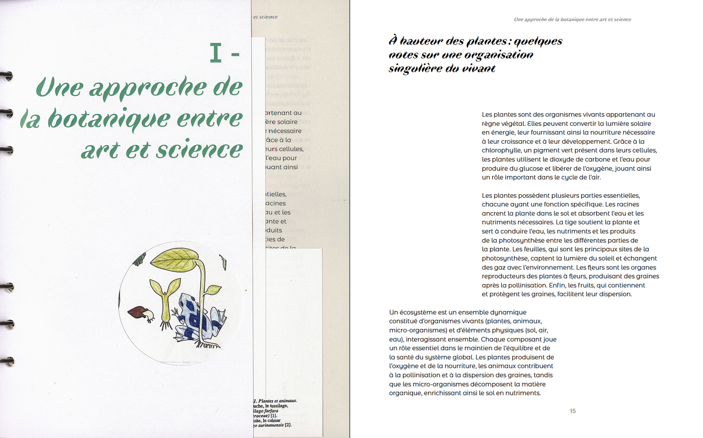

Essai sur les formes du vivant et autres fictions. Pour une esthétique du vivant en contexte numérique.
Ce mémoire propose une réflexion sur le rôle du hasard dans les processus naturels au travers de l’art génératif, envisagé comme une métaphore de l’imprévisibilité du vivant. À travers cette exploration, nous questionnerons la manière dont les oeuvres contemporaines utilisent des systèmes génératifs et algorithmiques pour imiter la nature et ses processus imprévisibles. Ces oeuvres parviennent à déconstruire la nature, tout en préservant ses aspects essentiels, soulignant ainsi que l’imprévisible reste un élément fondamental du vivant, même dans un cadre numérique.
Le hasard s’affirme
ici comme un moteur de création, rappelant le caractère inattendu et changeant
des cycles naturels. Un autre axe de cette réflexion portera sur
la place de la fiction afin d’élargir la pensée sur le vivant. La fiction
permet d’introduire une dimension spéculative, en envisageant des formes de
vie ou des comportements végétaux qui dépassent le cadre strictement scientifique.
En s’appuyant sur des simulations végétales et génératives, l’art et la
fiction se rejoignent pour interroger les frontières entre le monde réel et les univers de fiction.
Lien vers le mémoire

